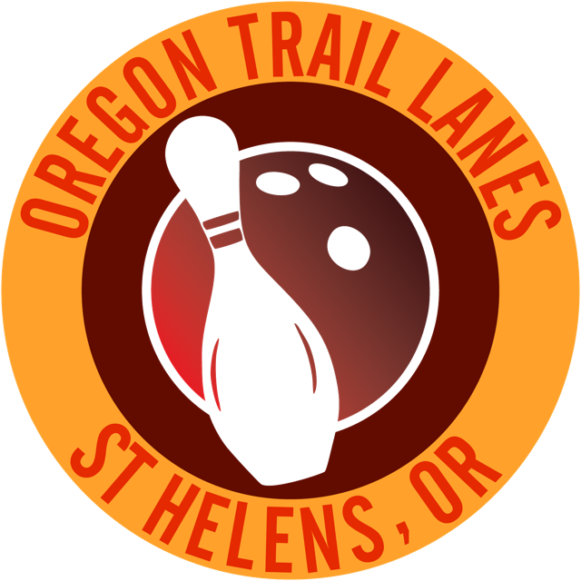
Founding Sponsor · 2026
Oregon Trail Lanes Founding business
Keep it Rolling!
735 S Columbia River Hwy
503-397-1011
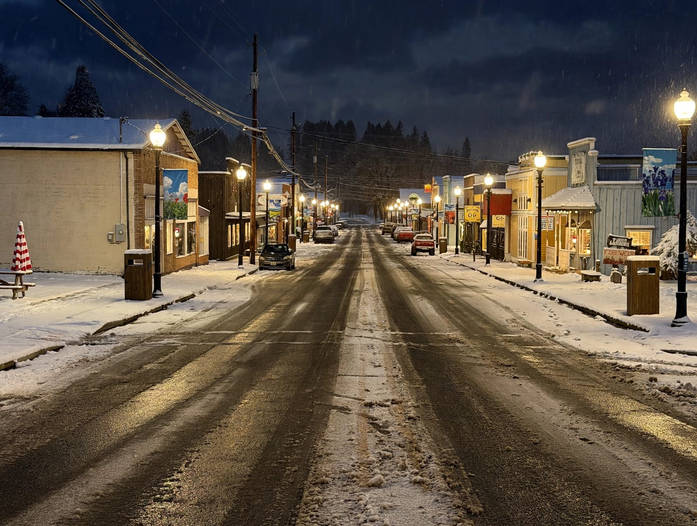
Presented by our Founding Sponsors

Founding Sponsor · 2026
Keep it Rolling!
735 S Columbia River Hwy
503-397-1011
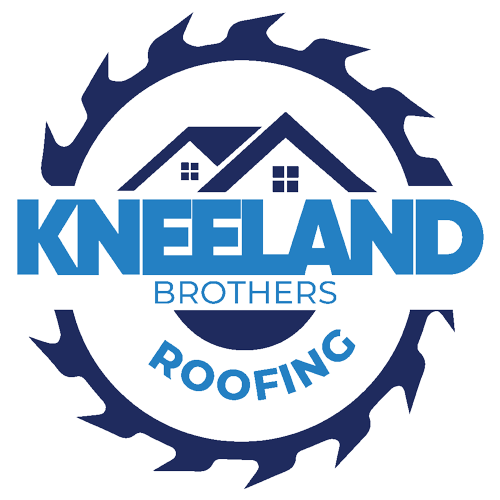
Founding Sponsor · 2026
Superior workmanship. Integrity. Guaranteed.
33459 SW JP West Rd, Scappoose
(503) 319-6871
Malarkey Certified Contractor
Founding Sponsor · 2026
Fencing, decking & remodeling
34797 Pittsburg Road, St. Helens
(503) 396-8977
Licensed, bonded & insured · CCB #241111
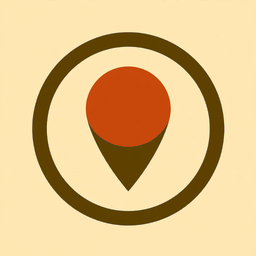
Checking what changed…
Loading your town picker…
Beaver Falls, Columbia County — photo by DJ Cane, CC BY-SA 4.0, Wikimedia Commons
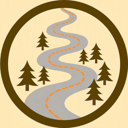
Running the checks…
Driving the Lewis & Clark Bridge — photo by Prashkan90, CC BY-SA 3.0, Wikimedia Commons
Never miss a change
The County Watch checks the National Weather Service, the bridge and the ferry every two minutes while this page is open — and tells you the moment something new posts.
Start the County Watch →Storm mornings, the districts decide early and post on their own sites first — this board mirrors their call for every district in the county.
On storm mornings the districts decide early — St. Helens aims to decide by 6:00 AM — and post first on their own sites and apps. This card is a hand-updated storm-day board: in quiet weather it stands by and shows where each district posts; on a storm morning it carries that morning’s report for every district, checked against the district’s own posting before it goes up here.
No automated closure feed exists for these districts, so this board is updated by hand on storm mornings — and a district’s own site is always the final word for your family.
No closure or delay report is posted for today — this board is standing by for the next storm morning. Regular school days need no report.
A school bus on a snowy road — photo by Coastline09, CC BY-SA 4.0, via Wikimedia Commons
Community notice
This space rotates free notices for Columbia County nonprofits — food banks, libraries, volunteer fire & EMS recruitment. A community service, not an ad.
How community notices work →Putting today's briefing together…
Local stories from the county’s own newsrooms, gathered by the Oregon Civic Newsstand. Tap a story to read it here.
Loading the news…
The roads and lines on this map come from OpenStreetMap and county records, and some of it is wrong. If a road shows on your land that should not be there, a name is spelled wrong, or a road is missing or does not exist, tell us where and what is wrong. We will check it against the county records and get it corrected at the source.
Say where it is (nearest road or town), what is wrong, and what it should be. Your name and a way to reach you are optional, they just help us follow up.
Every report is checked against county records before anything changes. A report does not guarantee a road will be removed or renamed.
Send a report →Working out the drive…
Typical drive — no live traffic. The time comes from the free OSRM routing service, driving the route at posted speeds in normal conditions — a closure, a bridge lift, or a crash on US-30 will change the real trip.
Section Sponsor · Travel · Spot 1 of 4 — Open
One of only four Section Sponsor spots in Travel — your name and logo woven between the map, the bridge and the ferry everyone checks before they drive. $49/mo, month to month, cancel anytime. Includes a Featured directory listing.
Claim this spot →Working out where the boat is…
Where the boat is comes from its printed timetable: the crossing takes about 12 minutes and the ferry has no live tracker.
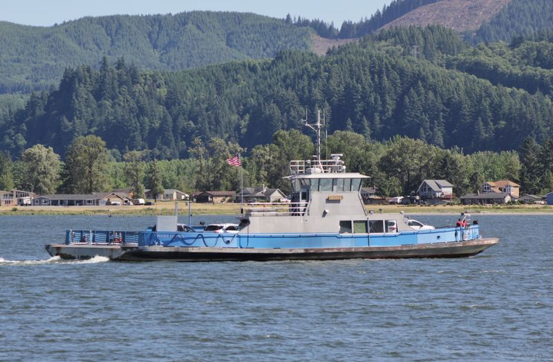
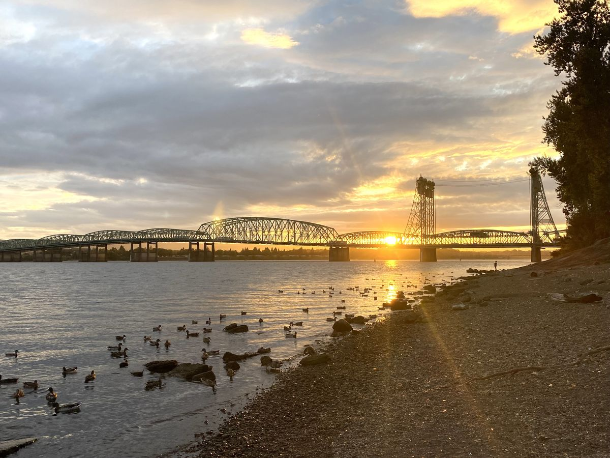
Checking the county page for ferry closure alerts…
Working out the next sailing…
Working out when you'd need to leave…
Drive times are typical for US-30 / OR-47 in normal conditions — your trip will vary, and the boat doesn't wait. The plan adds a 10-minute cushion at the dock for parking, fares (cash only), and loading.
The last ferry on the Lower Columbia, run by Wahkiakum County. It sails on a fixed schedule — there's no live tracker, so the timetable below is the status, every day of the year. The alert line above is read from the county's official ferry page by our fetcher.
On the hour, 5:00 AM – 10:00 PM
Quarter past the hour, 5:15 AM – 10:15 PM
Car $6 · Motorcycle $4 · Bicycle $3 · Walk-on $2
Bridge closed? The ferry historically runs extended hours during Lewis & Clark Bridge closures — confirm on the county page before counting on it.
Official ferry page — Wahkiakum County →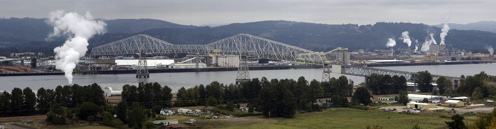
Loading Lewis & Clark Bridge status…
Loading route cameras…
Loading camera list…
Road data is collected by our fetcher from ODOT TripCheck and WSDOT every few minutes and shown with its snapshot time — it never pretends to be fresher than it is. Full official detail: TripCheck · WSDOT traffic. Commuting to Portland? A US-30 closure usually means Cornelius Pass or the St. Johns Bridge — check before you leave, not after.
Section Sponsor · Travel · Spot 2 of 4 — Open
One of only four Section Sponsor spots in Travel — your name and logo woven between the map, the bridge and the ferry everyone checks before they drive. $49/mo, month to month, cancel anytime. Includes a Featured directory listing.
Claim this spot →Loading incidents…
The next stretch of hours on the US-30 corridor, town by town — so ice, fog, or snow on the drive shows up here before it shows up on the windshield. Hourly from the National Weather Service.
Loading the corridor forecast…
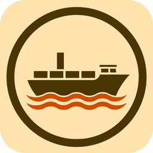
Loading river traffic…
Ships sorted by when they'll pass your home town — St. Helens until you pick one under “Your town” on the Today tab. ETAs use each ship's current reported speed, so a ship that slows down arrives later. Live positions from AISStream, refreshed about every five minutes.
Section Sponsor · Travel · Spot 3 of 4 — Open
One of only four Section Sponsor spots in Travel — your name and logo woven between the map, the bridge and the ferry everyone checks before they drive. $49/mo, month to month, cancel anytime. Includes a Featured directory listing.
Claim this spot →Loading aircraft overhead…
Aircraft: community ADS-B receivers via adsb.fi. Refreshes automatically.
Outside the county, kept because the drive starts here: the two US-26 cameras that show what the mountain is doing — Government Camp (MP 54) and Blue Box Pass (MP 64), the high stretch on the way to Bend. Live stills from ODOT TripCheck, refreshed every 10 minutes.
Loading Mt. Hood cameras…
Section Sponsor · Travel · Spot 4 of 4 — Open
One of only four Section Sponsor spots in Travel — your name and logo woven between the map, the bridge and the ferry everyone checks before they drive. $49/mo, month to month, cancel anytime. Includes a Featured directory listing.
Claim this spot →Loading alerts from the National Weather Service…
Loading forecast…
Locating the space station…
Working out when the station passes over the county…
Aircraft: community ADS-B receivers via adsb.fi. ISS position: wheretheiss.at. Pass times are computed on this page from the station's published orbit. All refresh automatically.
Section Sponsor · Outdoors · Spot 1 of 4 — Open
One of only four Section Sponsor spots in Outdoors — your name and logo woven between the weather, the rivers and the fishing everyone checks before they head out. $49/mo, month to month, cancel anytime. Includes a Featured directory listing.
Claim this spot →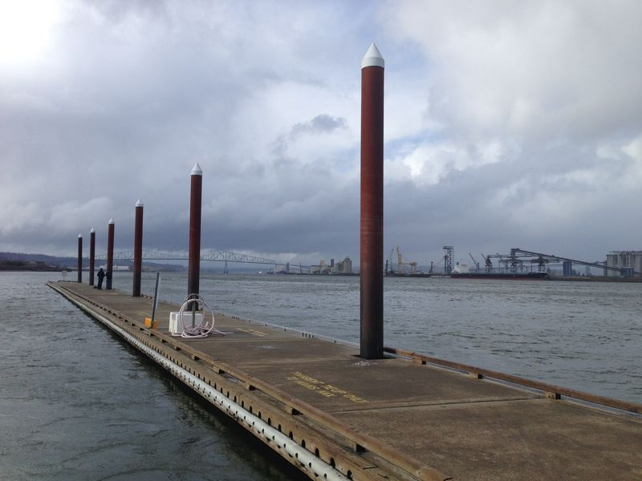
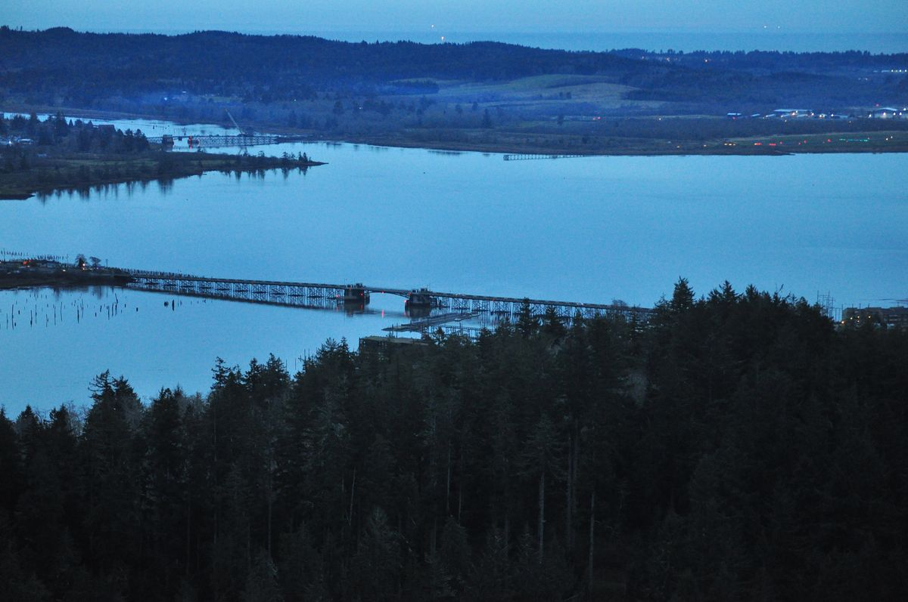
Loading USGS gauge readings…
Flood warnings, when issued, appear in Weather Alerts above. Readings are provisional USGS data.
The whole curve, not just the turns — NOAA's predicted height hour by hour, today through the next two days, at the county's two river stations. Pick a station and watch the water move.
Loading the tide curve…
Tide predictions from NOAA Tides & Currents (St. Helens 9439201, Wauna 9439099), in feet above mean lower low water. A King tide tag marks a high tide in the top handful of the whole year for that station. Predictions, not measurements — a high river runs higher and later than the curve.
Before you launch: the wind, the waves and the tide in one place — the numbers that decide a fishing hour, laid out plain. The Columbia is a tidal river the whole way past St. Helens; the ocean reaches up the channel twice a day.
Loading wind, waves and tides…
Wind and wave forecasts from the National Weather Service; buoy readings from NOAA's National Data Buoy Center; tides from NOAA Tides & Currents; the river gauge is USGS. A forecast is a plan, not a promise — read the bar report before you cross.
Section Sponsor · Outdoors · Spot 2 of 4 — Open
One of only four Section Sponsor spots in Outdoors — your name and logo woven between the weather, the rivers and the fishing everyone checks before they head out. $49/mo, month to month, cancel anytime. Includes a Featured directory listing.
Claim this spot →Every salmon bound for the upper Columbia passes Bonneville Dam, where the Army Corps counts them through the fish ladders. The newest posted day usually lags the calendar a day or two — the counts are tallied from video and checked before they post.
Loading the dam counts…
Counts: U.S. Army Corps of Engineers, published by the Fish Passage Center and Columbia Basin Research (DART). A zero is a real answer, not a gap — it means the counters saw none that day.
Plotting the runs…
No forms, no settings — pick a day and read the dot. The stronger the tide push, the further right it lands; the rougher the weather, the higher it climbs. Whichever corner it leans toward is the call.
Reading the river’s current predictions…
Photo: sockeye salmon leaping a waterfall — Marvina Munch, U.S. Fish & Wildlife Service (public domain), via Wikimedia Commons.
Section Sponsor · Outdoors · Spot 3 of 4 — Open
One of only four Section Sponsor spots in Outdoors — your name and logo woven between the weather, the rivers and the fishing everyone checks before they head out. $49/mo, month to month, cancel anytime. Includes a Featured directory listing.
Claim this spot →Working out today's light…
Sunrise, sunset, twilight and the moon are computed on this page from the sun's and moon's positions — there is no feed behind them, nothing to go stale, and like every printed almanac they're good to a few minutes. Times are for the town named in the panel; set a home town above and the almanac follows it.
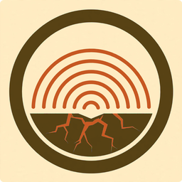
Loading USGS earthquake data…
Loading interagency wildfire data (NIFC WFIGS)…
Official incident data from the National Interagency Fire Center (WFIGS). For evacuation notices, always follow Columbia County Emergency Management and InciWeb.
The other invisible thing over the county — what’s in the air you’re breathing. Wood-stove smoke on still winter nights, wildfire smoke in summer. Here’s the Air Quality Index for the town on the Forecast card above, and where the model says it goes from here.
Checking the air…
A modeled estimate from Open-Meteo’s atmosphere model (Copernicus CAMS) — there is no official AQI monitor in the county, so read it as a good guide, not a gauge on a pole. Official readings and alerts: AirNow.
Section Sponsor · Outdoors · Spot 4 of 4 — Open
One of only four Section Sponsor spots in Outdoors — your name and logo woven between the weather, the rivers and the fishing everyone checks before they head out. $49/mo, month to month, cancel anytime. Includes a Featured directory listing.
Claim this spot →One of only four Section Sponsor spots in Events & More — your name and logo woven between the events, the directory and the weekend everyone checks before they make plans. $49/mo, month to month, cancel anytime. Includes a Featured directory listing.
Going? Tap ＋ Add on any event and it lands in your own calendar — time converted, official page attached — so your phone reminds you the day it happens.
Featured Event
Loading events from the city calendars…
Collected by our fetcher from the official city calendars. Official sources: St. Helens · Scappoose · Columbia County
The places that carry the county’s story — museums, historic buildings, pioneer cemeteries and landmarks, gathered for the Columbia County Cultural Coalition’s cultural count.
Loading the county’s heritage list…
Every entry was checked against the source linked with it.
Featured Local Business
Between the river, the roads and the weekend — $29/mo, one of six spots.
Claim this spot →From the site
Markets, games, bazaars and boats — everything on the county’s calendars for the next few days, in one list.
See what’s on →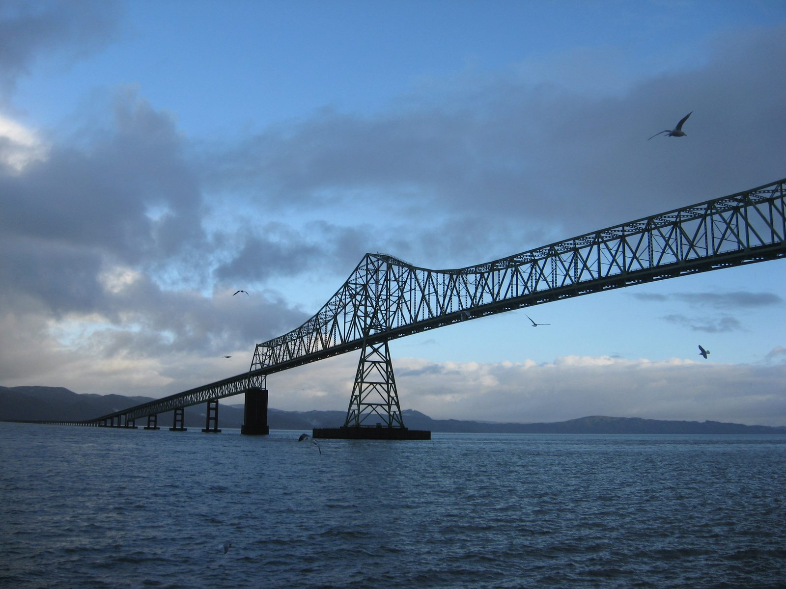
Babysitters, cleaners, handymen, pet sitters, tutors — the one-person businesses this county runs on, in one plain list. The storefronts sit up top as sponsors and featured businesses; this shelf is for the smallest operators. Tap a category to narrow it down.
Adding yourself to the directory is free. It takes one short form, and every listing is read by a person before it appears, nothing posts automatically. Want to sit at the top where people see you first? Featured puts your listing above the rest for $29/mo.
Add your business — freeTap a pin to find the business in the list below.
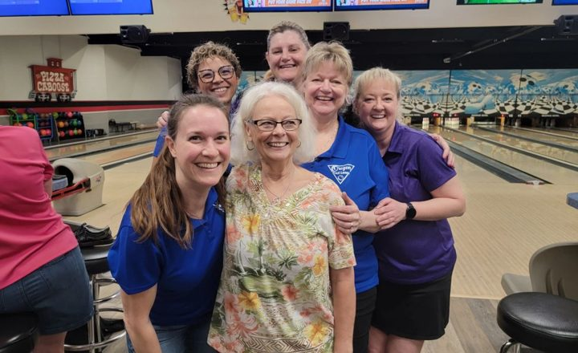
Bowling, leagues and birthday parties on Columbia River Highway.
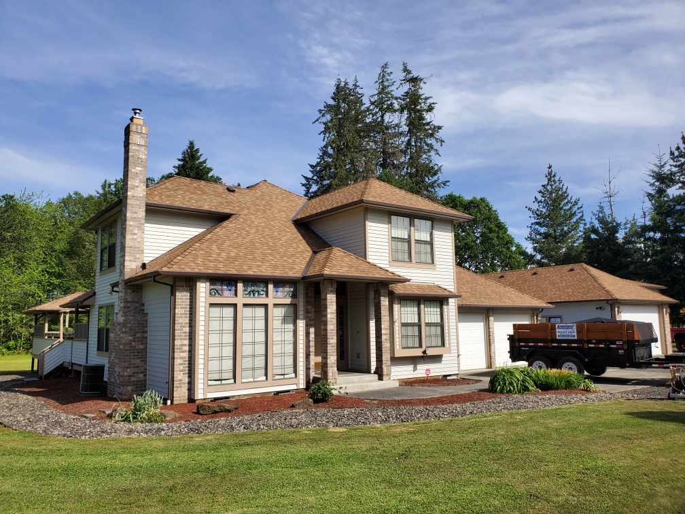
Roof replacement and repair from a family crew born and raised in Columbia County — free estimates, financing, and a warranty on every new roof.
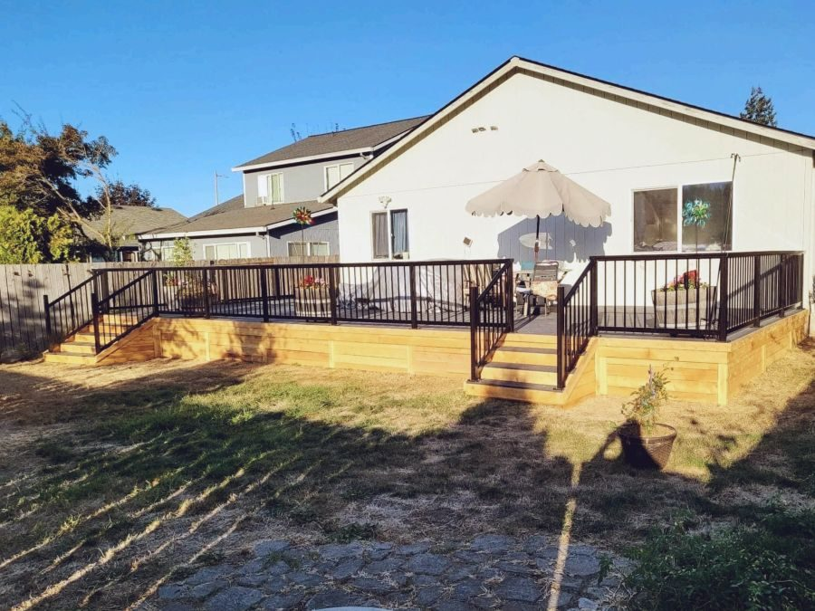

Fencing, decking and remodeling from a licensed, bonded and insured St. Helens crew — Oregon CCB #241111.
BioLume Med Spas is a locally owned medical aesthetics practice specializing in Botox, dermal fillers, collagen stimulation, and advanced skin rejuvenation. We focus on natural looking results, personalized treatments, and helping our clients look and feel their best.
In-home doggy day care and boarding in St. Helens. Dogs stay indoors, sleep inside at night, and get walks and car rides. Open for Thanksgiving break, with meet and greets available so you can get to know her first.
Free community dinner every Tuesday at First Lutheran Church — doors open at 5, dinner served at 5:30. Everyone is welcome: just show up, no paperwork, no questions. Run by Community Meals of Columbia County.
Free food pantry for people in the greater St. Helens area who need food assistance. Open Monday through Thursday, 9 AM to 1 PM, and the first Wednesday evening of the month, 5 to 7 PM.
Free food pantry for the Scappoose area. Open Tuesdays and Thursdays, 1 to 3 PM.
Free food pantry at Scappoose Foursquare Church. Open Wednesdays at 12 PM.
Emergency food assistance for the Rainier community. Open Mondays and Wednesdays, 10 AM to 4 PM, and the last Saturday of the month, 10 AM to 12 PM.
Free emergency food boxes with three to five days of fresh and shelf-stable food for residents of the 97016 zip code. Open Monday, Tuesday and Thursday, 11 AM to 2:30 PM.
Free food pantry for the Vernonia area. Open Tuesdays and Thursdays, 10 AM to 2 PM.
Free food pantry at the Natal Grange hall. Open the second Wednesday of each month, 12 to 3 PM.
Free, confidential help for survivors of domestic violence, sexual assault and stalking, including emergency shelter. The crisis line answers 24 hours a day. Office: (503) 397-7110.
Free mental health crisis help, 24 hours a day, by phone, walk-in and mobile response. Crisis services are grant funded and cost nothing. Main office: (503) 397-5211.
Help with eviction prevention, rental assistance, deposits and homeless services. Programs are limited and depend on funding. Open Monday to Friday, 8:30 AM to 5 PM (closed 12:30 to 1:30 for lunch).
Help paying past-due electric and NW Natural gas bills when a shut-off is looming after a medical problem or unexpected event in the last 90 days. Ask for the crisis utility assistance form.
Free diapers for families in need, up to 200 diapers per child each month while supplies last.
Free healthy food, nutrition education and breastfeeding support for pregnant and postpartum women, infants and children under 5 who qualify. Run by Columbia Health Services.
Free early learning and development for children from birth to age 5 in low-income families. The St. Helens center serves St. Helens, Scappoose, Warren, Columbia City and Deer Island.
Low-cost health care on a sliding scale based on income, from Columbia Health Services. Open Monday to Friday, 8 AM to 4:30 PM (closed 12:30 to 1:30 for lunch). Call for an appointment.
Free help for veterans with VA claims, benefits questions and referrals. Open Monday to Friday, 8:30 AM to 5 PM (closed 12:30 to 1:30 for lunch). Based at Community Action Team.
Free legal help for people struggling to make ends meet: housing, jobs, medical care and safety from domestic violence. The St. Helens satellite office serves all of Columbia County.
Free recovery support with meetings across Columbia County. There are no dues or fees for AA membership. Call the hotline for meeting times and places.
Free public library: borrow books and movies, use Libby for e-books, and join free programs for kids and adults. Open Monday to Wednesday 10 AM to 7 PM, Thursday 2 to 7 PM, Friday 10 AM to 5 PM, Saturday 10 AM to 2 PM.
Licensed landscape architect with over 27 years of experience. Custom landscape design and design consultations, from small in-town lots to large rural estates.
Home of Black Bear Coffee and the Bear Creek Pub — known for the Vernonia Mudslide cinnamon roll and the Topnotch Burger.
Coffee shop attached to the Black Iron Grill. Trail riders swear by the Wingnut as a Banks-Vernonia Trail halfway stop.
Family-run Mediterranean cafe in a bright former bank building, with indoor bike parking — gyros, dolmas and homemade baklava.
Mexican restaurant known for fish tacos, carne asada and mango margaritas, with Luau Wednesdays specials.
Serving Vernonia since 1970 — pizza, homemade milkshakes, breakfast burritos and calzones.
Family pizzeria with arcade games and a self-serve salad bar — known for the Big Game Hunter pizza.
Small-town tavern (the Inn is a name, not lodging) with a full kitchen — pizza, burgers and tacos, plus live music nights.
Rustic 21+ bar known for The Betty White mushroom-Swiss burger, pool and shuffleboard.
Scratch-made sandwiches on grilled ciabatta and brioche — the Speziato Grinder and the Kilauea grilled chicken are the signatures. Also runs as a food cart.
Mexican food truck known for shrimp tacos, birria tacos and the monster Boss Burrito.
Drive-thru coffee stand open weekday mornings from 4–5 AM — infused Red Bull drinks and brioche breakfast sandwiches.
Family-owned BBQ food truck and caterer — fans post craving the smoked Reuben.
Vernonia’s only full grocery store, locally owned by Randy & Sharon Parrow — the old Sentry Market, renamed R&S in 2014. Open 8 AM to 9 PM daily.
Chevron convenience store at the east end of Bridge Street — the town’s gas-and-convenience stop, open 5 AM to 10 PM (11 PM Saturdays).
Do It Best hardware store, 25 years in 2025 — also the state liquor store, with paint mixing, key cutting and propane refills.
Family owned and operated for over 40 years — hardware and home goods on Bridge Street.
Nonprofit thrift store supporting the Vernonia Senior Center and its Meals on Wheels program — clothing, antiques and home goods.
Jam-packed antique store — owners Joe & Nina source stock on cross-country trailer trips each year. Open Thursday to Sunday.
Primitive and vintage Americana antiques — new stock posted on Instagram.
Antique store in a historic building built in 1892 — furniture and home decor, with a sister year-round Christmas store, the Rusty Nail Annex.
Reclaimed and antique shop in the Bridge Street antique cluster.
Fine-art gallery — photography, bronze, jewelry and custom framing — open since 1991, and now roasting coffee on site as Artisan Coffee.
Gun store and gunsmithing — hunting, vintage and tactical firearms and ammo. The big rooster mural on the building is a downtown landmark.
Custom saddles and leather goods by maker Gretchen Johnston — crafting, repairs and free estimates.
Women’s boutique in the Brunsman Building — affordable clothing and home goods, and a stop on the downtown Chocolate Walk.
Family-run pet store and grooming salon, plus a mobile grooming van that comes to you — food, treats, toys, supplies and grooming by appointment.
Dog boarding ranch with a separate small-dog section and its own turnout space. Open 10 to 5 daily.
Tanning, red light therapy and an infrared sauna, plus hair, nails, pedicures, permanent makeup and massage therapy.
Massage therapy by appointment — open Monday, Wednesday, Friday and Saturday, 10 to 5.
Tattoo studio in the Brunsman Building, opened in May 2025 by Alanna Ogden.
The town’s health center — primary care Tuesday to Friday, urgent care Monday to Friday, with lab and X-ray on site.
Vernonia’s dentist — general dentistry Monday to Thursday with Dr. Scheuerman and team.
Vernonia’s U-Haul dealer — moving trucks, cargo vans and pickups. Closed Thursdays and Sundays.
Auto parts store that also stocks heavy-duty, marine and farm parts, and hydraulic hoses.
Auto repair at the west end of Bridge Street, Monday to Friday, 9 to 5.
Auto repair south of town on the Nehalem Highway, Monday to Friday, 8 to 5.
Auto body shop specialising in restorations, plus collision repair, windshields and framework.
Office-support shop run by Camp Cedar Ridge — UPS and Amazon package drop-off, copy and print work, office supplies and gifts.
Vernonia’s storefront real estate office on Bridge Street.
Full-service credit union branch on Bridge Street — the building doubled as the Forks Police Station in Twilight tour itineraries.
Member-owned electric co-op serving Vernonia since 1945 — the town’s power utility.
Vernonia’s twice-monthly free newspaper, published by Scott Laird.
Logging contractor specialising in private timber — free estimates, buys and sells timber, and sells firewood from the lot.
Historic 1924 bed & breakfast — six bedrooms, run by Mac & Julie McCallum. A base for Banks-Vernonia Trail riding and stargazing.
Nonprofit retreat camp on 32 acres, sleeping 200 — also runs the Vernonia Village afterschool program, Loggin’ Laundry and Communication Station.
Nine-hole, par-35 public course built in 1928 and restored under new ownership since 2023 — home of the glow-golf night tournament at Friendship Jamboree.
Senior center running Meals on Wheels and weekday lunches, funded in part by its Bargains on Bridge Street thrift store.
Public library with Friday preschool storytime, a writers group and craft workshops — also the town’s ballot drop site at elections.
Clean houses, watch kids, walk dogs, fix what’s broken? Be one of the first names in the directory — listings are free.
Listings are advertisements, not endorsements. We haven’t vetted these services — for in-home services especially, check references before you book.
Adding yourself to the directory is free. It takes one short form, and every listing is read by a person before it appears, nothing posts automatically. Want to sit at the top where people see you first? Featured puts your listing above the rest for $29/mo.
Add your business — freePhoto: Cape Meares Lighthouse, Tillamook County
Section Sponsor · Events & More · Spot 2 of 4 — Open
One of only four Section Sponsor spots in Events & More — your name and logo woven between the events, the directory and the weekend everyone checks before they make plans. $49/mo, month to month, cancel anytime. Includes a Featured directory listing.
Claim this spot →Every number here names its source and its age. Green is fresh, amber is aging, red means treat the panel as stale and check the official source. If a feed ever goes quiet, this board shows it instead of hiding it.
Checking source ages…
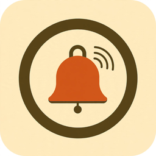
Everything else on this page waits for you to come and look. The watch doesn't. Leave this page open — in a tab, installed on your home screen, or up on the wall — and it checks the National Weather Service, the bridge, and the ferry every two minutes. If a new warning posts, the bridge closes, or the ferry puts out an alert while you're not looking, it tells you: a notification on this device where the browser offers them, a line in the log below, and — if you tick the box — it says new warnings out loud.
Setting up the watch…
Honest limits: the watch only runs while this page is open on this device — closing the tab stops it, and a phone may pause a background tab. It's a convenience, never a replacement for the National Weather Service, NOAA Weather Radio, or Columbia County emergency alerts.
Section Sponsor · Events & More · Spot 3 of 4 — Open
One of only four Section Sponsor spots in Events & More — your name and logo woven between the events, the directory and the weekend everyone checks before they make plans. $49/mo, month to month, cancel anytime. Includes a Featured directory listing.
Claim this spot →Installed, it opens full-screen like an app — no address bar, its own icon, the county one tap away. Free, and it still updates itself all day.
The wall display rotates the county’s answers. The screensaver is the quieter room: county photographs, changing slowly, with the clock and just the answers you pin — made to be left running on a kitchen tablet, a shop counter, or the TV in a waiting room. It refreshes itself from the same live sources as this page, never asks for anything, and leaves with one tap.
Putting it on a TV or an office screen? Open this page with ?display=1 added to the end of the address and the screensaver starts by itself — bookmark that address on the TV’s browser and it just comes up.
Pin the answers you care about with the chips below. The screensaver shows your pins, big enough to read across the room. Pins are kept on this device only, and you can change them any time.
The photographs in the screensaver come from the county itself — and yours could be one of them. Send a photo you took anywhere in Columbia County and, once it’s approved, it joins the pool every screensaver cycles through, with your name on it. Free, always.
Two easy ways, no account and no sign-in: email your photo to travis@columbiacountylive.com with your name and where you took it, or answer 3 quick questions on the photo form and then email the photo. That is all it takes.
One honest gate: every photo is looked at by a person before it joins the pool — for the place, the picture, and the permission. Nothing appears automatically, and a photo that isn’t yours to share never goes up.
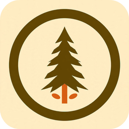
Columbia County Live is one live look at Columbia County, Oregon — US-30 and the Lewis & Clark Bridge, the Columbia and Nehalem rivers, weather alerts, the Oscar B ferry, and what’s on around the county — assembled from official public sources and refreshed all day. It is built and run by Nomad Development Group, a small local studio, on free public data and free hosting, which is how a page like this can exist for a county of 54,000 at all.
Why it’s free — and what stays free. The core of this page is public-safety data: weather alerts, river levels, bridge and ferry status, road conditions. That core is free, carries no sponsor, and stays that way — it will never sit behind a paywall. That promise is the reason the page exists. The Community Help section keeps that same promise: the county’s free help — food pantries, crisis lines, help with rent and utility bills, support for families and veterans — gathered in one place, free to everyone who needs it.
The founding sponsorships are now filled. Only three founding spots will ever exist, and the local businesses that hold them are what fund this page — their support is what keeps the safety core above free for everyone. In return, each founding sponsor gets a named spot on this page, a permanent “Founding Sponsor · 2026” badge, and a place on the Community Partners wall below. Oregon Trail Lanes of St. Helens, Kneeland Brothers LLC and C&M Renovations of St. Helens hold the three spots — thank you. All three founding spots are filled, and founding closes January 31, 2027; after that, no new founding sponsors, ever.
That button opens a short interest form — your business or organization name, a contact name, your town, and what you’re interested in: a founding sponsor spot, listing a business, or something else. We’ll write back. Asking costs nothing and commits you to nothing.
Section Sponsor · Events & More · Spot 4 of 4 — Open
One of only four Section Sponsor spots in Events & More — your name and logo woven between the events, the directory and the weekend everyone checks before they make plans. $49/mo, month to month, cancel anytime. Includes a Featured directory listing.
Claim this spot →Orange dots: road incidents and closures from the same ODOT TripCheck / WSDOT snapshot as the Roads card. Evacuation routes: the Sheriff sets them for each incident — there is no standing route map for this county. If you are told to leave, follow the route in the official notice and the county's During a Disaster page.
Tap any row for the full card. Readings are as fresh as their sources — the same data the rest of this site runs on, gathered in one place.
In an emergency, call 911.
Columbia County Emergency Management — 230 Strand St, St. Helens · 971-203-3617
County: During a Disaster — steps, evacuation levels, sandbag locations
County: Make a Plan — family emergency plans and escape routes
If you ever have to tell a dispatcher or a tow truck exactly where you are: tap the button, read the numbers out loud, or copy and paste them into a text. GPS works without cell signal.
Free food, crisis lines, help with rent, power bills and diapers, support for families, veterans and recovery — the help this county already offers, gathered in one place. Everything here is free, with one honest exception: the health center charges on a sliding scale, and its listing says so. Tap any phone number to call. Every listing was checked against the service’s own website.
In an emergency, call 911.
SAFE crisis line — (503) 397-6161 · 24/7 Mental health crisis — (503) 782-4499 · 24/7
Free community dinner every Tuesday at First Lutheran Church — doors open at 5, dinner served at 5:30. Everyone is welcome: just show up, no paperwork, no questions. Run by Community Meals of Columbia County.
Free food pantry for people in the greater St. Helens area who need food assistance. Open Monday through Thursday, 9 AM to 1 PM, and the first Wednesday evening of the month, 5 to 7 PM.
Free food pantry for the Scappoose area. Open Tuesdays and Thursdays, 1 to 3 PM.
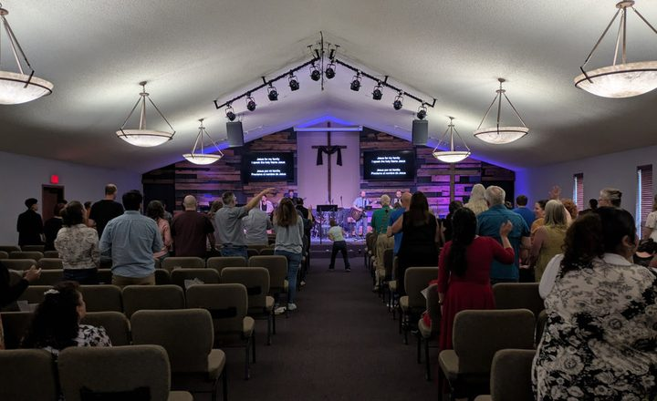
Free food pantry at Scappoose Foursquare Church. Open Wednesdays at 12 PM.
Emergency food assistance for the Rainier community. Open Mondays and Wednesdays, 10 AM to 4 PM, and the last Saturday of the month, 10 AM to 12 PM.
Free emergency food boxes with three to five days of fresh and shelf-stable food for residents of the 97016 zip code. Open Monday, Tuesday and Thursday, 11 AM to 2:30 PM.
Free food pantry for the Vernonia area. Open Tuesdays and Thursdays, 10 AM to 2 PM.
Free food pantry at the Natal Grange hall. Open the second Wednesday of each month, 12 to 3 PM.
Free market at Scappoose Public Library and Heritage Park: offer up things you no longer need and take home what you do, everything is free. Held the third Saturday of every month, 11 AM to 2 PM.
Free community shop at the St. Helens Community Center on Gable: everything is free, and no donation is needed to shop. Open Friday, November 20 and Saturday, November 21 only.
Free produce distribution at Scappoose Public Library, in the Library Meeting Room. Every Wednesday, 10 AM to 12 PM. All are welcome, no registration needed.
Free, confidential help for survivors of domestic violence, sexual assault and stalking, including emergency shelter. The crisis line answers 24 hours a day. Office: (503) 397-7110.
Free mental health crisis help, 24 hours a day, by phone, walk-in and mobile response. Crisis services are grant funded and cost nothing. Main office: (503) 397-5211.
Free, confidential peer-to-peer help, support and crisis line for youth ages 10 to 24, staffed by trained youth and young adult volunteers. Call 1-877-968-8491, text "teen2teen" to 839863, or chat online at theyouthline.org.
Help with eviction prevention, rental assistance, deposits and homeless services. Programs are limited and depend on funding. Open Monday to Friday, 8:30 AM to 5 PM (closed 12:30 to 1:30 for lunch).
Help paying past-due electric and NW Natural gas bills when a shut-off is looming after a medical problem or unexpected event in the last 90 days. Ask for the crisis utility assistance form.
Free diapers for families in need, up to 200 diapers per child each month while supplies last.
The official app for Oregon Trail EBT cards: check your food and cash balances, see deposits and change your PIN. Oregon DHS points to ebtEDGE only — other EBT apps are not official, so don’t trust them with your card.
Free healthy food, nutrition education and breastfeeding support for pregnant and postpartum women, infants and children under 5 who qualify. Run by Columbia Health Services.
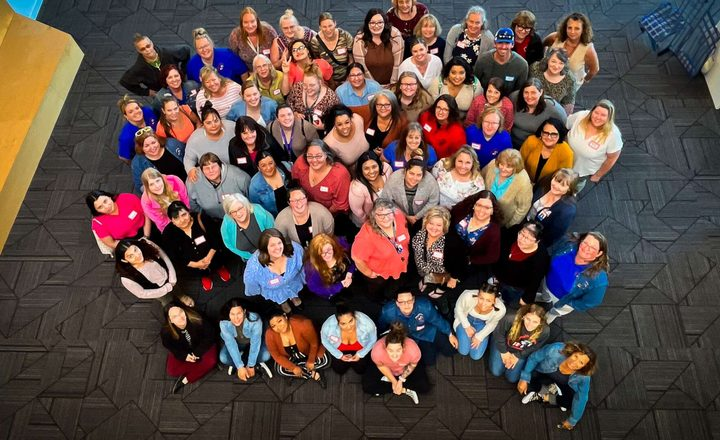
Free early learning and development for children from birth to age 5 in low-income families. The St. Helens center serves St. Helens, Scappoose, Warren, Columbia City and Deer Island.
Low-cost health care on a sliding scale based on income, from Columbia Health Services. Open Monday to Friday, 8 AM to 4:30 PM (closed 12:30 to 1:30 for lunch). Call for an appointment.
Free, confidential support for parents coping with the stress of welcoming a new baby, including postpartum depression and anxiety. Peer support, resources and support groups led by trained facilitators.
Free help for veterans with VA claims, benefits questions and referrals. Open Monday to Friday, 8:30 AM to 5 PM (closed 12:30 to 1:30 for lunch). Based at Community Action Team.
Free legal help for people struggling to make ends meet: housing, jobs, medical care and safety from domestic violence. The St. Helens satellite office serves all of Columbia County.
Free recovery support with meetings across Columbia County. There are no dues or fees for AA membership. Call the hotline for meeting times and places.
Free public library: borrow books and movies, use Libby for e-books, and join free programs for kids and adults. Open Monday to Wednesday 10 AM to 7 PM, Thursday 2 to 7 PM, Friday 10 AM to 5 PM, Saturday 10 AM to 2 PM.